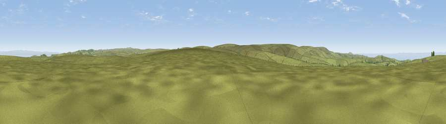

Viewpoint near Brendon
#11485 in England · top 26% of its area beats it · near BrendonWhere it is
The exact computed spot (SS 76125 44525). Click the marker for map links.
The view, rendered

A 360° render of this exact spot computed from the terrain model, tree cover and land cover — summer colours, afternoon light, calibrated against photographs of famous viewpoints. Real trees, hedges and buildings will differ in detail.
The panorama
Grey silhouette: terrain skyline in each direction (720 bearings, Earth curvature and refraction included). Dashed green: skyline with trees (+15 m) and buildings (+8 m) as obstacles. Blue strip: how far the ground is visible on each bearing.
Where the view opens
Wedge length = distance to the farthest visible ground on that bearing (vegetation-aware). Rings at 10, 25 and 50 km.
What fills the view
90% grassland · 7% water · 2% woodland ·
Angular shares of the visible panorama (visual magnitude), not map area. Landscape diversity 0.18 (0–1 Shannon).
Key numbers
More beautiful places nearby
The staircase of upgrades: each row has a higher view potential than everything closer. Driving times are estimates from straight-line distance, calibrated against real road routing — check an actual route before setting out.
| Place | Direction | Drive | Score |
|---|---|---|---|
| Viewpoint near Simonsbath | S · 3 km | ~8 min | 61.5 |
| Viewpoint near Lynmouth | NNW · 4 km | ~10 min | 81.0 |
| Kipscombe Hill | N · 5 km | ~11 min | 83.3 |
| Wind Hill | NNW · 5 km | ~11 min | 86.5 |
| Viewpoint near Brendon | N · 6 km | ~13 min | 87.9 |
| Old Tennis Court | NW · 7 km | ~14 min | 88.3 |
| Holdstone Hill | W · 14 km | ~26 min | 90.2 |
| The Knoll | SE · 96 km | ~120 min | 91.0 |
51.18649, -3.77387 · source: screening · position refined by local search. Computed location — check access rights before visiting.